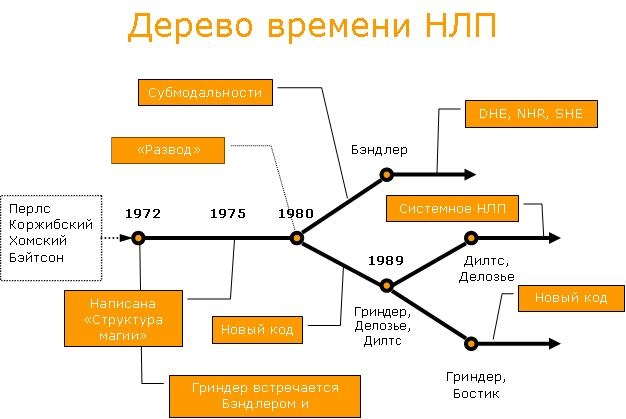

Нейро-лингвистическое программирование (НЛП) – околопсихологическая дисциплина, появившаяся в 70-е годы в США и до сих пор популярная как у себя на родине, так и в Европе, по другую сторону океана. Основатели НЛП с самого начала поставили себя в оппозицию к академической психологии, немедленно снискав неоднозначную репутацию – но, тем не менее, это направление продолжает расти и развиваться вот уже более 30 лет. Что же представляло и представляет собой НЛП? Не устарело ли оно? Что произошло с ним за столь немалый срок? Цель этой статьи – помочь читателю сориентироваться в мире НЛП и понять, чем эта область может быть интересна, с чего можно начать обучение и чем продолжить.* Родина НЛП – город Санта-Круз в Калифорнии. Именно там находилось отделение калифорнийского университета, в котором один из основателей НЛП, Джон Гриндер, работал профессором на кафедре лингвистики, а Ричард Бэндлер – второй основатель НЛП, обучался математике и программированию. Бэндлер был увлечен работой Фрица Перлза, одного из столпов гештальт-терапии. Он редактировал его книги, смотрел видеозаписи, и, весьма успешно копируя методы его работы, проводил сессии с клиентами и даже семинары. На один из таких семинаров в 1972 году был приглашен Джон Гриндер, увлеченный лингвистикой психолог, бывший ассистент Джорджа Миллера, отца когнитивной психологии. Цель его прихода была проста: понять, как Бэндлер делает то, что он делает и попытаться воспроизвести это. Гриндер попробовал объяснить работу Бэндлера на языке трансформационной грамматики и общей семантики. А помог ему в этом Грегори Бэйтсон – всемирно известный антрополог, кибернетик и лингвист, проживавший по соседству. Вместе они создали дисциплину, основным направлением которой стало моделирование – изучение и воспроизводство поведения «гениев», людей обладающих уникальными способностями. Кстати, организатором тех семинаров по гештальту был Френк Пьюселик – впоследствии ставший одним из лучших тренеров НЛП, сейчас живущий в Одессе и регулярно проводящий тренинги в Москве. В 1975 году вышла основополагающая книга по НЛП, "Структура магии". В ней были описаны лингвистические паттерны Перлза, а также других известных психотерапевтов того времени: Милтона Эриксона и Вирджинии Сатир. Кроме лингвистики – искусства задавания вопросов и изменения отношения к ситуациям, был описан ряд моделей, позволявшие терапевтам "читать" своих клиентов, словно открытую книгу, и помогать им в разрешении сложных ситуаций. Так появилось классическое НЛП, основной фокус внимания которого – эффективная коммуникация и помощь другим. Около 1980-го года между основателями НЛП произошел "развод", в результате которого каждый из них стал двигаться в своем направлении. Бэндлера заинтересовали субмодальности – тонкие различия в структуре нашего восприятия. Как яркость вспоминаемой "картинки" зависит от интенсивности переживаний? Как, управляя этими вещами, мы можем менять наше восприятие и отношение к ситуациям? Такими вопросами задался Бэндлер, и его дальнейшие исследования вертелись вокруг этой темы. Сейчас Ричард ведет тренинги по Design Human Engineering (DHE), что примерно можно перевести как "инженерное моделирование человека". Это способ "встраивать" себе внутрь различные "приборы": часы, компасы, регуляторы пульса – и таким образом управлять собой. Кроме того, Бэндлер ведет семинары по Neuro-Hypnotic Repatterning – "нейро-гипнотическому перепрограммированию", модель, которая представляет собой рафинированные паттерны гипноза Милтона Эриксона. Джон Гриндер пошел другой, хотя в чем-то очень похожей дорогой. В середине 80-х он по его словам, "оглядел мир НЛП и обнаружил, что многие люди, преуспевшие во влиянии на других явно не способны помочь сами себе". Тогда он создал подход, известный как "Новый Код НЛП", предназначенный для самоприменения. Основная идея Нового кода – работа с состояниями и доверие бессознательному, использование его ресурсов для принятия решений. В конце 1980-годов из НЛП выделились еще несколько групп со своими, оригинальными подходами. Среди них можно назвать Тони Роббинса, отца лайф-коучинга, Тодда Джеймса, развивающего подход под названием "терапия на линии времени" и, конечно же, Роберта Дилтса. Изрядно разбавив НЛП теорией систем и другими аналитическими методами, Дилтс создал школу, известную как "Системное НЛП". Примерно тогда же, в конце 1980-х, НЛП попало в Россию. Первые российские НЛП-Практики из Новосибирска проходили обучение у Джона Гриндера в Калифорнии. Они создали базис – площадку для "заезжих звезд" и последующее поколение российских тренеров училось уже в России. Пожалуй, самые известные и частые гости – Энн Энтус и Мерелин Аткинсон, коллеги Роберта Дилтса. Соответственно, большая часть российского НЛП – это "Системное НЛП". Кроме того, два раза в нашей стране проводил семинары Джон Гриндер: в 1997 и 2004 году. У него учились практически все российские тренера Нового кода. Ричард Бэндлер в России не бывал – однако, несколько тренеров (их число измеряется единицами) обучались у него в Великобритании и даже прошли сертификацию. С чего начать обучение НЛП? Если вас интересуют коммуникативные навыки и консультирование, то лучший выбор – это базовый, стандартный курс "НЛП-Практик". Он может продолжаться до 20 дней и проходит в нескольких вариантах: выходные раз в месяц, два-четыре раза в месяц и непрерывно (интенсивный курс). Ожидайте много разговоров – лингвистики, много работы в тройках: клиент-консультант-супервизор. Если вам понравится, и вас заинтересуют более "продвинутые" лингвистические паттерны, работа с убеждениями и моделирование – добро пожаловать на курс "НЛП-Мастер". Если вы хотите скорее помочь себе и научиться общаться с собой – вам подойдет Новый код НЛП. Как правило, это короткий двухдневный семинар, который предусматривает последующую самостоятельную работу. Начав заниматься НЛП, вы можете получить множество позитивных результатов. Но НЛП – не "волшебная таблетка". Нельзя сказать, что НЛП подойдет всем. Это довольно специфический подход, где многое основано не на строгих научных выкладках, а на блестящих догадках и ощущении, что "это работает". В ряде областей, таких как коммуникативная компетентность, личностное развитие и консультирование, НЛП имеет заслуженную репутацию "технологии успеха". И если вы откроете книгу по НЛП или придете на тренинг – возможно, у вас будет шанс понять это для себя.  Алексей Каптерев * В статье специально не упоминаются имена российских тренеров НЛП – но желающие без труда найдут их.
Источник: newcode.ru
опубликовано на NLPING.ru 01.10.2007
(function() {
window._pa = window._pa || {};
// _pa.orderId = "myOrderId"; // OPTIONAL: attach unique conversion identifier to conversions
// _pa.revenue = "19.99"; // OPTIONAL: attach dynamic purchase values to conversions
// _pa.productId = "myProductId"; // OPTIONAL: Include product ID for use with dynamic ads
var pa = document.createElement('script'); pa.type = 'text/javascript'; pa.async = true;
pa.src = ('https:' == document.location.protocol ? 'https:' : 'http:') + "//tag.perfectaudience.com/serve/52fe1fb766eb2484d7000056.js";
var s = document.getElementsByTagName('script')[0]; s.parentNode.insertBefore(pa, s);
})();